| 유리 창문 | 나무틀과 투명한 유리로 만든 창문 ■ 색 변경 가능 |
유리 8 목재 1 |
텅 빈 섬 작업대 | |
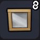 |
연결 유리 창문 | 나무틀로 된 작은 유리 창문 ■ 가로,세로로 놓으면 연결된다 / 색 변경 가능 |
유리 2 목재 1 |
텅 빈 섬 작업대 |
| 유리창 | 구리 틀에 끼운 유리 ■ 색 변경 가능 |
유리 4 동괴 1 |
텅 빈 섬 작업대 | |
| 유리창 X | 비스듬한 십자 구리 틀에 끼운 유리 ■ 색 변경 가능 ※ 빌더 하트 20 교환 (잠금 해제) |
유리 4 동괴 1 |
텅 빈 섬 작업대 | |
| 유리창 ＋ | 십자 구리 틀에 끼운 유리 ■ 색 변경 가능 ※ 빌더 하트 20 교환 (잠금 해제) |
유리 4 동괴 1 |
텅 빈 섬 작업대 | |
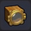 |
배의 창문 | 나무틀을 사용해 튼튼하게 만든 두꺼운 유리 창문 ※ 빌더 하트 20 교환 (잠금 해제) |
목재 3 유리 2 |
텅 빈 섬 작업대 |
| 에어 벤트 | 실내와 실외의 공기를 순환시키는 에어 벤트 ■ 나란히 놓으면 연결된다 |
시도늄 2 철괴 1 |
텅 빈 섬 작업대 | |
| 돔 창문 | 방주에 달려 있는 둥글고 튀어나온 창문 | 시도늄 2 유리 1 |
텅 빈 섬 작업대 | |
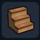 |
나무 계단 | 나무로 만든 인공적인 턱 ■ 색 변경 가능 |
목재 3 | 텅 빈 섬 작업대 |
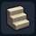 |
돌계단 | 돌로 만들어진 튼튼한 계단 ■ 색 변경 가능 |
석재 3 | 텅 빈 섬 작업대 |
| 융단 계단 | 융단으로 된 우아한 계단 ■ 나란히 놓으면 무늬가 변화 / 색 변경 가능 |
솜 3 | 텅 빈 섬 작업대 | |
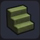 |
사교의 계단 | 하곤성의 돌로 된 계단 ※ 빌더 하트 20 교환 (잠금 해제) |
파괴의 모래 5 석재 2 |
텅 빈 섬 작업대 |
| 슬로프 계단 | 얇고 단단한 금속으로 만들어진 계단 | 시도늄 2 | 텅 빈 섬 작업대 | |
| 사다리 | 나무를 조립해서 만든 발판 ■ 벽에 걸면 1단 위로 올라갈 수 있다 / 색 변경 가능 |
목재 3 | 텅 빈 섬 작업대 | |
| 쇠사슬 | 철로 된 튼튼한 사슬 ■ 벽에 걸면 1단 위로 올라갈 수 있다 ※ 빌더 하트 20 교환 (잠금 해제) |
철괴 3 | 텅 빈 섬 작업대 | |
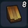 |
나무 지붕 | 나무껍질로 만든 지붕 ■ 모서리에 놓으면 자동으로 변화 |
큰 나무의 수피 1 목재 1 |
텅 빈 섬 작업대 |
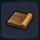 |
나무 지붕 - 널빤지 | 나무껍질로 만든 지붕 널빤지 | 큰 나무의 수피 1 목재 1 |
텅 빈 섬 작업대 |
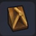 |
나무 지붕 - 창문 장식 | 나무껍질로 만든 지붕의 창문 장식 | 큰 나무의 수피 1 목재 1 |
텅 빈 섬 작업대 |
| 나무 지붕 장식 | 나무껍질로 만든 지붕 장식 | 큰 나무의 수피 1 목재 1 |
텅 빈 섬 작업대 | |
| 지붕 | 건물 윗부분에 다는 지붕 ■ 모서리에 놓으면 자동으로 변화 / 색 변경 가능 |
흙 1 목재 1 |
텅 빈 섬 작업대 | |
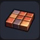 |
지붕 - 널빤지 | 건물의 지붕에 쓰이는 얇은 판 ■ 색 변경 가능 |
흙 1 | 텅 빈 섬 작업대 |
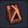 |
지붕 - 창문 장식 | 건물 윗부분에 다는 창문 달린 지붕 ■ 색 변경 가능 |
흙 1 유리 1 목재 1 |
텅 빈 섬 작업대 |
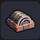 |
지붕 장식 | 지붕 위에 놓는 둥근 장식돌 ■ 색 변경 가능 |
흙 1 석재 1 |
텅 빈 섬 작업대 |
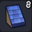 |
돌 지붕 | 돌로 만들어 건물애 다는 지붕 ■ 모서리에 놓으면 자동으로 변화 / 색 변경 가능 |
석재 2 | 텅 빈 섬 작업대 |
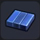 |
돌 지붕 - 널빤지 | 건물의 돌 지붕에 쓰이는 얇은 판 ■ 색 변경 가능 |
석재 2 | 텅 빈 섬 작업대 |
| 돌 지붕 - 창문 장식 | 건물 윗부분에 다는 돌 지붕의 창문 ■ 색 변경 가능 |
석재 2 | 텅 빈 섬 작업대 | |
| 돌 지붕 장식 | 돌 지붕 위에 놓는 둥근 장식 ■ 색 변경 가능 |
석재 2 | 텅 빈 섬 작업대 | |
| 가게 차양 | 창문에 설치하면 햇빛이나 비를 막아주는 작은 지붕 ■ 색 변경 가능 ※ 빌더 하트 10 교환 (잠금 해제) |
풀 실 2 목재 1 |
텅 빈 섬 작업대 | |
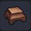 |
세련된 기둥 장식 | 기둥 꼭대기에 다는 심들한 장식 ■ 색 변경 가능 ※ 빌더 하트 10 교환 (잠금 해제) |
목재 3 | 텅 빈 섬 작업대 |
| 굴뚝 | 지붕에 달아 연기를 내보낼 때 쓰이는 구멍 ※ 빌더 하트 10 교환 (잠금 해제) |
흙 3 | 텅 빈 섬 작업대 | |
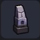 |
돌담 장식 | 돌담 위에 놓는 길쭉한 장식돌 ※ 빌더 하트 20 교환 (잠금 해제) |
석재 3 석탄 1 동괴 1 |
텅 빈 섬 작업대 |
| 횃불 | 나뭇가지에 마물의 기름을 스며들게 한 것 | 목재 3 기름 1 |
텅 빈 섬 작업대 | |
| 화덕 | 냄비 등에 열을 잘 전달할 수 있는 가구 ※ 빌더 하트 20 교환 (잠금 해제) |
석재 4 목재 2 철괴 2 |
텅 빈 섬 작업대 | |
| 초 | 작은 금 받침대에 올린 양초 | 금괴 1 기름 1 |
텅 빈 섬 작업대 | |
| 랜턴 | 구리와 유리로 만들어진 랜턴 | 동괴 1 유리 1 기름 1 |
텅 빈 섬 작업대 | |
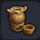 |
수프 보울 | 따뜻한 수프가 담긴 도자기 그릇 ※ 빌더 하트 20 교환 (잠금 해제) |
흙 3 기름 1 |
텅 빈 섬 작업대 |
| 촛대 | 촛불을 세울 때 쓰이는 받침대 ※ 빌더 하트 20 교환 (잠금 해제) |
은괴 5 기름 1 |
텅 빈 섬 작업대 | |
| 화톳불 | 큰 불꽃으로 주위를 밝힌다 | 석재 3 석탄 1 |
텅 빈 섬 작업대 | |
| 금 화톳불 | 토대가 황금으로 만들어진 화톳불 | 금괴 5 석탄 1 |
텅 빈 섬 작업대 | |
| 블록 라이트 | 철제 틀로 된 유리등 ■ 색 변경 가능 |
금괴 1 유리 1 |
텅 빈 섬 작업대 | |
| 파수꾼의 화톳불 | 전 투 시 파수꾼이 담당 구역의 표식으로 삼는 화톳불 | 목재 3 화톳불 1 |
텅 빈 섬 작업대 | |
| 벽에 거는 토치 | 진흙으로 만들어진 벽에 거는 조명 | 진흙 1 목재 1 기름 1 |
텅 빈 섬 작업대 | |
| 벽걸이 횃불 | 벽에 걸 수 있도록 가공한 횃불 | 횃불 1 동괴 1 |
텅 빈 섬 작업대 | |
| 사교의 횃불 | 푸른 불꽃이 타오르는 벽에 거는 횃불 | 횃불 1 철괴 1 파괴의 모래 1 |
텅 빈 섬 작업대 | |
| 벽에 거는 램프 | 금속으로 만들어 빛을 발히는 밝은 조명 | 유리 1 철괴 1 기름 1 |
텅 빈 섬 작업대 | |
| 벽걸이 촛대 | 벽에 걸어 촛불을 세울 수 있는 받침대 ※ 빌더 하트 20 교환 (잠금 해제) |
은괴 5 기름 1 |
텅 빈 섬 작업대 | |
| 야한 조명 | 매혹적인 분위기가 떠도는 램프 ※ 붉은 보석를 획득 후 (잠금 해제) |
붉은 보석 5 기름 1 |
텅 빈 섬 작업대 | |
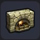 |
난로 | 불을 때서 주위를 따스하게 데우는 가구 | 석재 8 석탄 4 동괴 1 |
텅 빈 섬 작업대 |
| 호박 랜턴 | 호박 속을 파낸 랜턴 | 호박 1 목재 1 기름 1 |
텅 빈 섬 작업대 | |
| 페로의 조명 장식 | 페로 이름 모양의 조명 장식 | 금괴 5 은괴 5 블루 메탈 1 |
텅 빈 섬 작업대 | |
| 짚 침대 | 풀을 그러모으기만 한 간단한 잠자리 ■ 잠 잘 수 있는 가구 |
마른 풀 3 | 텅 빈 섬 작업대 | |
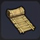 |
감옥 침대 | 마른 풀로 짠 원시적인 잠자리 ■ 잠 잘 수 있는 가구 ※ 빌더 하트 10 교환 (잠금 해제) |
마른 풀 2 목재 1 |
텅 빈 섬 작업대 |
| 컬러 침대 | 나무와 풀 실로 만든 빨간 침대 ■ 잠 잘 수 있는 가구 / 색 변경 가능 ※ 빌더 하트 50 교환 (잠금 해제) |
풀 실 5 목재 2 |
텅 빈 섬 작업대 | |
| 나무침대 | 목재 프레임에 깃털 이불을 얹은 잠자리 ■ 잠 잘 수 있는 가구 / 색 변경 가능 |
풀 실 3 목재 2 |
텅 빈 섬 작업대 | |
| 킹 사이즈 침대 | 큰대자로 잘 수 있는 포근한 잠자리 ■ 잠 잘 수 있는 가구 / 색 변경 가능 |
솜 3 모피 2 목재 2 |
텅 빈 섬 작업대 | |
| 왕녀의 침대 | 막이 드리운 커다랗고 호화로운 침대 ■ 잠 잘 수 있는 가구 / 색 변경 가능 |
금괴 2 솜 5 모피 2 목재 2 |
텅 빈 섬 작업대 | |
| 관 | 시신을 넣을 수 있는 돌로 만든 관 ■ 잠 잘 수 있는 가구 |
석재 4 | 텅 빈 섬 작업대 | |
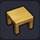 |
나무 판자 테이블 | 투박하게 자른 목재를 조립해서 만든 간소한 책상 | 목재 3 | 텅 빈 섬 작업대 |
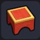 |
컬러 데스크 | 나무로 만든 빨간 책상 ■ 색 변경 가능 ※ 빌더 하트 20 교환 (잠금 해제) |
목재 5 | 텅 빈 섬 작업대 |
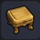 |
나무 책상 | 나무를 깎아 만든 작은 테이블 ■ 색 변경 가능 |
목재 3 | 텅 빈 섬 작업대 |
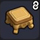 |
카운터 테이블 | 연결되는 카운터 테이블 ■ 나란히 놓으면 연결된다 |
목재 3 | 텅 빈 섬 작업대 |
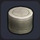 |
돌 테이블 | 석재를 연마해서 만든 작은 테이블 | 석재 3 | 텅 빈 섬 작업대 |
| 세련된 테이블 | 예쁜 천으로 덮인 작은 테이블 ■ 색 변경 가능 |
풀 실 3 목재 2 |
텅 빈 섬 작업대 | |
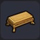 |
나무 테이블 | 목재를 조립해서 만든 긴 테이블 ■ 색 변경 가능 |
목재 4 | 텅 빈 섬 작업대 |
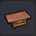 |
구리 테이블 | 구리판을 상판으로 쓴 테이블 | 동괴 3 통 1 |
텅 빈 섬 작업대 |
| 제단 | 공물 등을 올리는 엄숙한 의식용 받침대 | 솜 3 목재 2 |
텅 빈 섬 작업대 | |
| 사교의 제단 | 하곤 교단이 의식에 사용하는 제단 | 솜 3 목재 2 |
텅 빈 섬 작업대 | |
| 나무 판자 테이블 - 대 | 투박하게 자른 나무를 조립해서 만든 커다란 테이블 | 목재 5 | 텅 빈 섬 작업대 | |
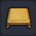 |
큰 나무 테이블 | 목재를 조립해서 만든 커다란 테이블 ■ 색 변경 가능 ※ 빌더 하트 20 교환 (잠금 해제) |
목재 5 | 텅 빈 섬 작업대 |
| 스퀘어 테이블 | 목재로 만들어진 사각형의 커다란 테이블 ■ 색 변경 가능 ※ 빌더 하트 50 교환 (잠금 해제) |
목재 5 풀 실 4 |
텅 빈 섬 작업대 | |
| 로토의 대형 테이블 | 용사의 문장이 그려진 커다란 테이블 | 목재 6 | 텅 빈 섬 작업대 | |
| 라운드 테이블 | 돌을 연마해서 만든 커다랗고 둥근 테이블 | 석재 6 금괴 2 |
텅 빈 섬 작업대 | |
| 바 카운터 | 세련된 술집에 놓여 있는 카운터 | 목재 4 철괴 3 |
텅 빈 섬 작업대 | |
| 왕의 식탁 | 왕을 위한 요리를 올리는 식탁 ■ 색 변경 가능 |
목재 6 솜 3 |
텅 빈 섬 작업대 | |
| 통나무 의자 | 투박하게 자른 목재를 조립해서 만든 간소한 의자 ■ 앉을 수 있는 가구 |
목재 2 | 텅 빈 섬 작업대 | |
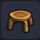 |
나무 의자 | 나무를 깎아 만든 작은 의자 ■ 앉을 수 있는 가구 / 색 변경 가능 |
목재 2 | 텅 빈 섬 작업대 |
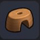 |
목욕탕 의자 | 목욕탕에서 몸을 닦을 때 쓰는 의자 ■ 앉을 수 있는 가구 / 색 변경 가능 ※ 빌더 하트 20 교환 (잠금 해제) |
목재 2 | 텅 빈 섬 작업대 |
| 돌 의자 | 석재를 연마해 모피를 씌운 의자 ■ 앉을 수 있는 가구 |
모피 1 석재 2 |
텅 빈 섬 작업대 | |
| 쿠션 의자 | 부드러운 쿠션이 달린 의자 ■ 앉을 수 있는 가구 / 색 변경 가능 |
풀 실 3 목재 2 |
텅 빈 섬 작업대 | |
| 둥근 쿠션 | 둥글고 푹신푹신한 쿠션, 앉았을 때 촉감이 좋다 ■ 앉을 수 있는 가구 / 색 변경 가능 |
솜 2 풀 실 1 |
텅 빈 섬 작업대 | |
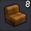 |
가죽 소파 | 모피를 사용해 만든 소파 ■ 앉을 수 있는 가구 / 나란히 세우면 연결된다 / 색 변경 가능 |
모피 3 솜 2 목재 1 |
텅 빈 섬 작업대 |
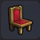 |
귀족 의자 | 등받이가 달린 고급스러운 의자 ■ 앉을 수 있는 가구 / 색 변경 가능 |
모피 1 솜 1 목재 1 |
텅 빈 섬 작업대 |
| 덱 체어 | 완만하게 휘어진 나무 의자 ■ 앉을 수 있는 가구 / 색 변경 가능 |
모피 2 풀 실 2 목재 1 |
텅 빈 섬 작업대 | |
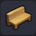 |
나무 판자 벤치 | 투박하게 자른 목재를 조립해서 만든 벤치 ■ 앉을 수 있는 가구 |
목재 3 | 텅 빈 섬 작업대 |
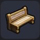 |
벤치 | 가로로 긴 목재 의자 ■ 앉을 수 있는 가구 / 색 변경 가능 |
목재 3 실 2 |
텅 빈 섬 작업대 |
| 편안한 소파 | 딱 적당히 푹신한 편안한 의자 ■ 앉을 수 있는 가구 / 색 변경 가능 ※ 빌더 하트 50 교환 (잠금 해제) |
목재 2 풀 실 2 솜 3 |
텅 빈 섬 작업대 | |
| 고급 벤치 | 은을 아낌없이 써서 만든 화려한 벤치 ■ 앉을 수 있는 가구 ※ 빌더 하트 50 교환 (잠금 해제) |
은괴 5 | 텅 빈 섬 작업대 | |
| 부서진 옥좌 | 마물에게 파괴된 옥좌 ■ 앉을 수 있는 가구 |
옥좌 1 | 그루터기 작업대 | |
| 옥좌 | 임금님이 앉는 근사한 의자 ■ 앉을 수 있는 가구 |
부서진 옥좌 1 솜 5 금괴 2 |
텅 빈 섬 작업대 | |
| 하곤의 옥좌 | 하곤이 앉는 화려한 의자 ■ 앉을 수 있는 가구 ※ 텅 빈 섬에서 하곤 교회를 만들자 (잠금 해제) |
금괴 15 솜 15 |
텅 빈 섬 작업대 |